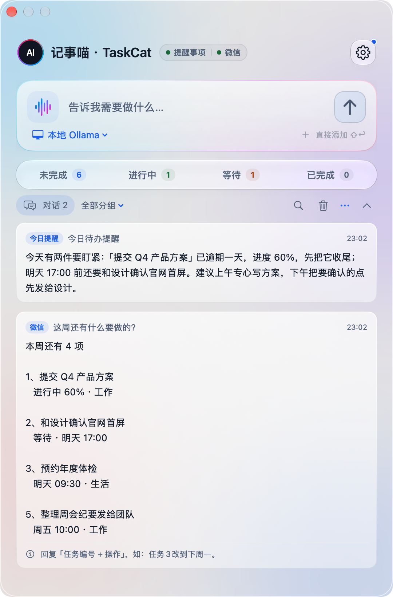
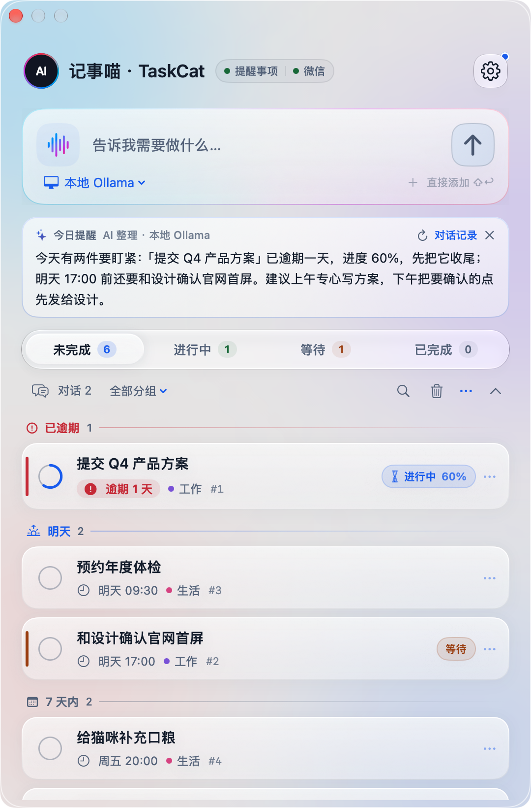
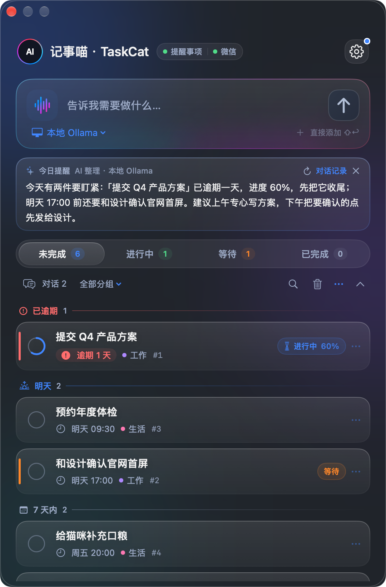
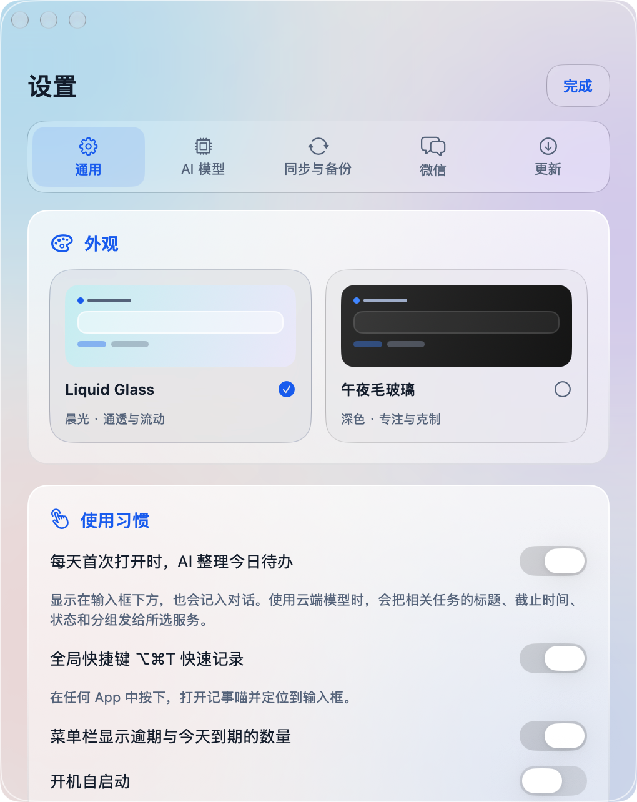

每天一段今日提醒
AI 读一遍逾期、今天到期和进行中的事，告诉你先后顺序。没配模型时，本机照样整理。


想到一件事，打开 App、找列表、选日期、填分组。念头已经没了。
⌥⌘T 在任何窗口里弹出输入框，一句话说完就回到手头的事。
列表越积越长，打开只看到一堵墙，分不清哪件今天必须做。
每天第一次打开，AI 先用两三句话告诉你：哪件逾期了，今天先做哪件。
人在外面，手边只有微信。想改个时间，只能等回到电脑前。
在微信里问“这周还有什么”，回“任务3改到下周一”，Mac 上同步改好。
AI 读一遍逾期、今天到期和进行中的事，告诉你先后顺序。没配模型时，本机照样整理。

已逾期、今天、明天、7 天内各成一段。逾期标红，进行中显示进度环。

菜单栏图标旁的数字，就是今天逾期加到期的件数。
任何 OpenAI 兼容接口，或者本地 Ollama，数据不出本机。设置里一键测试连接。

通用、AI 模型、同步与备份、微信、更新，各归各位。新版本到了会弹窗提醒，点一下就装好。
记事喵可以接入你的微信。查待办、改时间、标完成，和菜单栏共用同一份任务、同一套编号。会改动任务的指令先发确认，回复短编号才执行。
右边是浏览器里的本地演示，不连接微信或模型。真实使用需要 Mac 上的记事喵在运行。
记事喵不建服务器，也不收集数据。它借用系统“提醒事项”存任务，用你选的模型理解句子。
选 iCloud 账户后，手机提醒事项里能看能改；到期由系统通知，Mac 关机也不耽误。
状态、进度、编号和回收站，经你自己的 iCloud Drive 同步。
不进备份，不跨机同步。发给模型的只有相关任务的标题、状态和分组，不含备注。
新版本先核对 SHA-256、代码签名和应用标识，替换失败自动还原。
Swift 与 SwiftUI 原生实现，Apache-2.0 许可。不放心就读代码，想改就自己编译。
# 克隆并构建
git clone https://github.com/tab16360/taskcat.git
cd taskcat && bash scripts/build-app.sh解压后拖进“应用程序”。被拦截时，在“隐私与安全性”底部点“仍要打开”。
点“授权并连接”，选择账户。只操作记事喵自己的专用列表。
填服务地址、模型 ID 和 Key，点“测试连接”。也可以先手动添加。
记事喵免费、开源。云端模型按你选的服务计费；本地模型不花钱，需要自己运行 Ollama 等服务。
应用用固定的自签名证书签名，没有经过 Apple 公证。核对来源后在“隐私与安全性”里点“仍要打开”即可，不需要关闭任何安全功能。之后的更新会保留提醒事项授权。
可以。任务同步到 iPhone 的提醒事项后，手机上照样能看、能改、能收到通知。只有 AI 理解、今日提醒和微信入口需要 Mac 上的记事喵在运行。
macOS 14 以上，Apple Silicon 已实测，Intel 尚未验收。没有独立的 iPhone App，手机端用系统提醒事项。
会改动任务的指令默认先给你确认，核对后再执行。点完成后几秒内也能撤销，删除的任务进回收站，可以恢复。